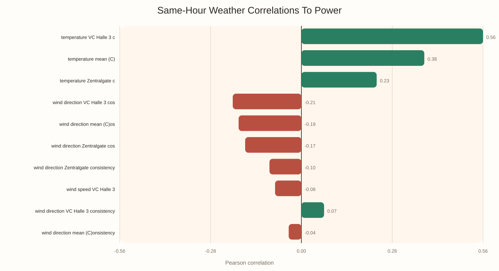
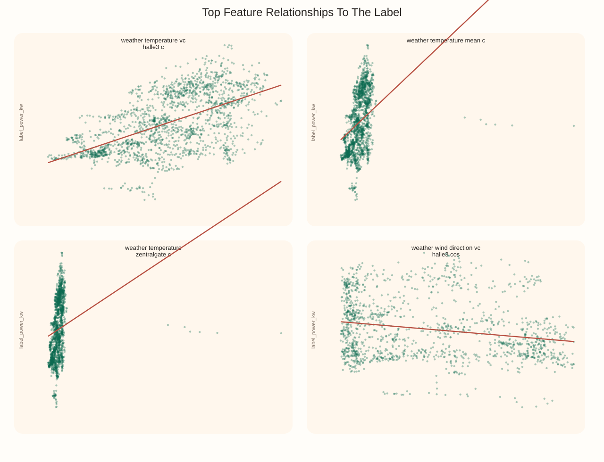
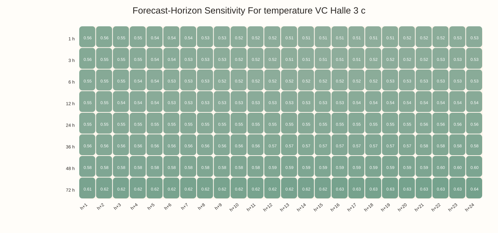

Weather Impact Analysis
This report focuses only on the weather streams and how they relate to hourly reefer power, both at the same hour and as historical context for predicting the next 24 hours.
Overlap Window
Label range: 2025-01-01T00:00:00Z to 2026-01-10T06:00:00Z
Weather range: 2025-09-24T10:00:00Z to 2026-02-23T14:00:00Z
Usable overlap: 2025-09-24T10:00:00Z to 2026-01-10T06:00:00Z
Hourly Coverage
Label hours: 8,403
Weather hours: 3,204
Weather features: 17
Interpretation
Same-hour correlations show actual-weather impact. History-window scores show how much observed weather context is useful at forecast time for the next 24 hours.
Top Same-Hour Weather Correlations
| Feature | Pearson r |
|---|---|
| temperature VC Halle 3 c | 0.557 |
| temperature mean (C) | 0.377 |
| temperature Zentralgate c | 0.231 |
| wind direction VC Halle 3 cos | -0.210 |
| wind direction mean (C)os | -0.193 |
| wind direction Zentralgate cos | -0.172 |
| wind direction Zentralgate consistency | -0.098 |
| wind speed VC Halle 3 | -0.081 |
| wind direction VC Halle 3 consistency | 0.069 |
| wind direction mean (C)onsistency | -0.039 |
Recommended History Windows
| Feature | Efficient window | Peak window | Peak score |
|---|---|---|---|
| temperature VC Halle 3 c | 51 h | 72 h | 0.623 |
| temperature mean (C) | 44 h | 72 h | 0.620 |
| temperature Zentralgate c | 46 h | 67 h | 0.574 |
| wind direction VC Halle 3 cos | 60 h | 72 h | 0.293 |
| wind direction mean (C)os | 62 h | 72 h | 0.290 |
| wind direction Zentralgate cos | 63 h | 72 h | 0.285 |
| wind direction Zentralgate consistency | 26 h | 40 h | 0.261 |
| wind speed VC Halle 3 | 57 h | 71 h | 0.223 |
| wind speed spread | 43 h | 50 h | 0.169 |
| temperature spread (C) | 43 h | 51 h | 0.164 |
Same-Hour Weather Correlations To Power

Same-Hour Weather Relationships

Past Weather Window Usefulness

Forecast-Horizon Sensitivity
